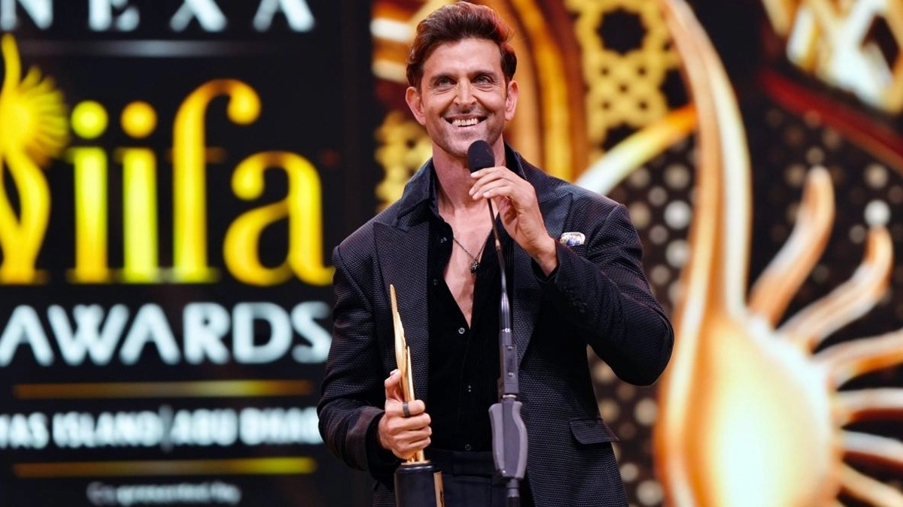
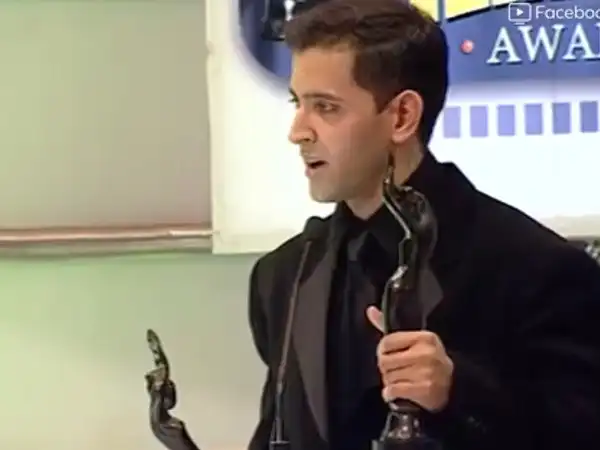
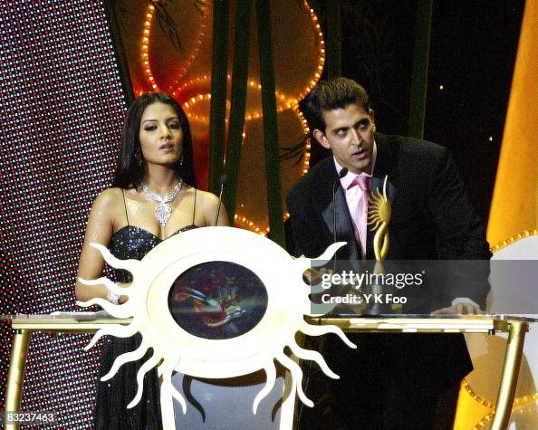
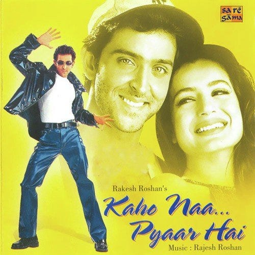
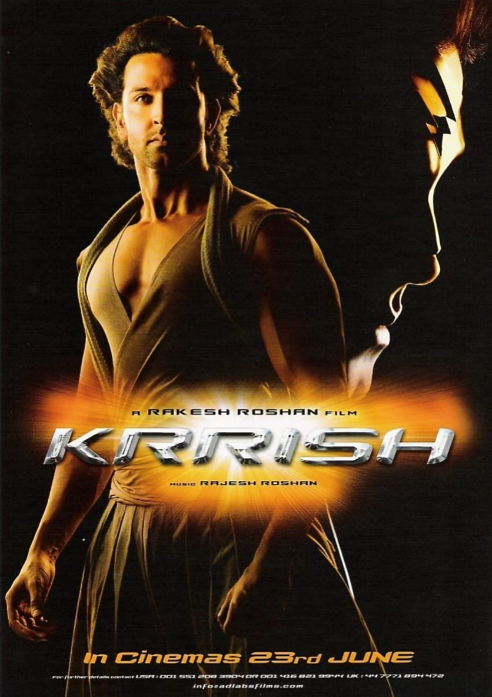
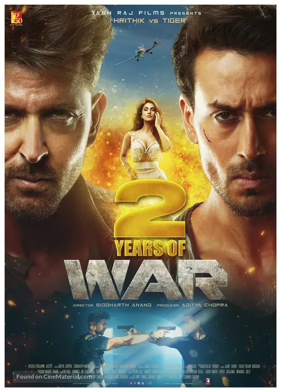

Hrithik Roshan is a prominent Indian actor known for his exceptional dancing skills, striking screen presence, and versatile performances in Hindi cinema. Born on January 10, 1974, in Mumbai, he is the son of filmmaker Rakesh Roshan. He made a sensational debut with the blockbuster film Kaho Naa... Pyaar Hai in 2000, which established him as a leading star overnight. Over the years, he has delivered powerful performances in films like Koi... Mil Gaya, Krrish, Jodhaa Akbar, and War, showcasing his range from romantic hero to superhero and historical emperor. Often admired for his dedication to fitness and perfection, Hrithik has won multiple awards, including several Filmfare Awards. Beyond acting, he is also recognized for his inspiring journey overcoming a childhood stammer and a serious health diagnosis, which has made him a role model for resilience and determination.

In 2004, Hrithik Roshan won the Best Actor award at the Filmfare Awards for his performance in the film Koi... Mil Gaya. At the 49th Filmfare Awards held on 20 February 2004 in Mumbai, he was honored as the Best Actor (Leading Role – Male).

Hrithik Roshan won the Best Actor award at the 46th Filmfare Awards (2001) for his performance in Kaho Naa… Pyaar Hai, which honoured the best films of 2000. The film was his debut as a lead actor, and he played dual roles of Rohit and Raj, showcasing his acting range.

In 2020, Hrithik Roshan received the Best Actor award at the Dadasaheb Phalke International Film Festival for his performance as Anand Kumar in Super 30 — a dramatic biographical film rather than a pure action role. super 30 is based on the real‑life story of a mathematics teacher who trains underprivileged students for entrance exams, and Hrithik was praised for his transformation in the role.

His debut film; made him an overnight superstar.

Introduced him as Bollywood’s first major superhero, boosting his action star image.

Reinforced his action hero image and became a massive blockbuster.